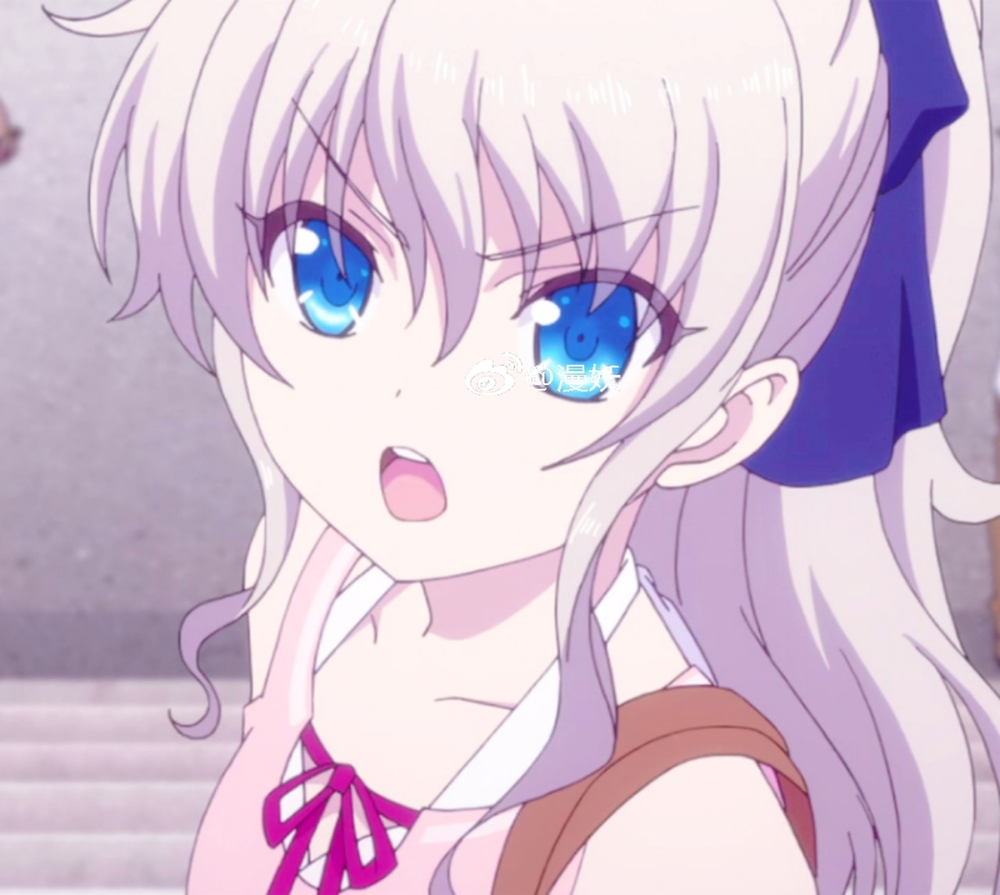
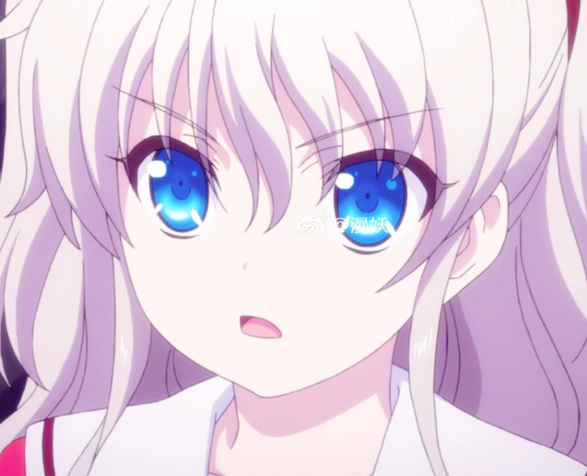
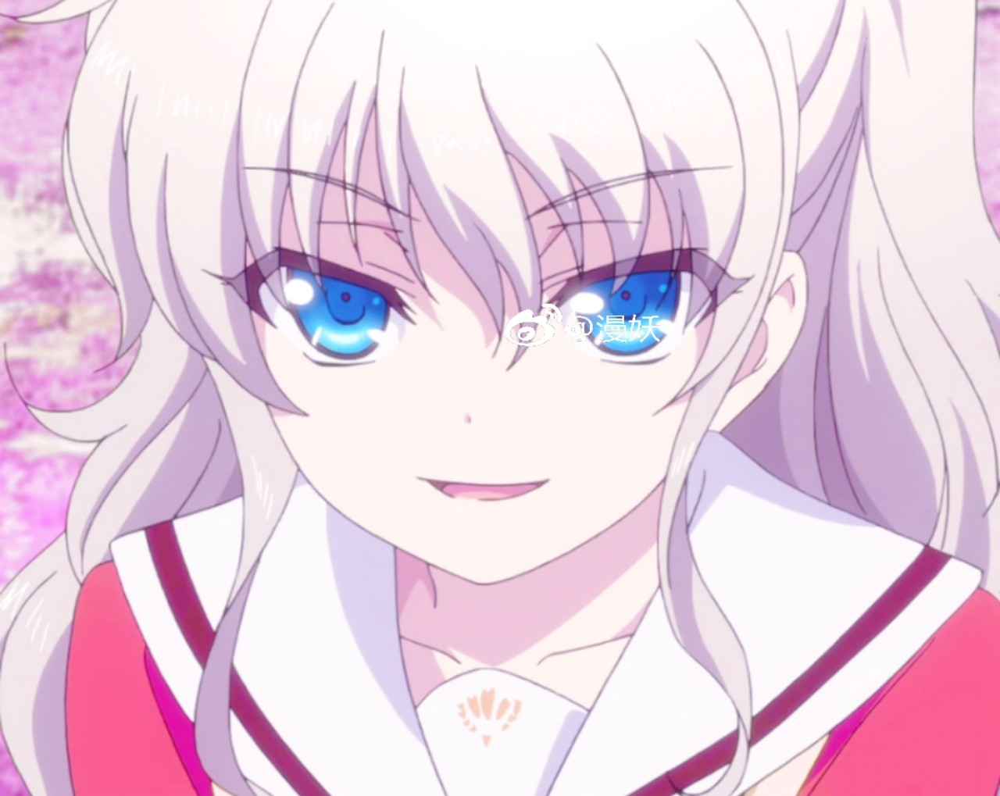
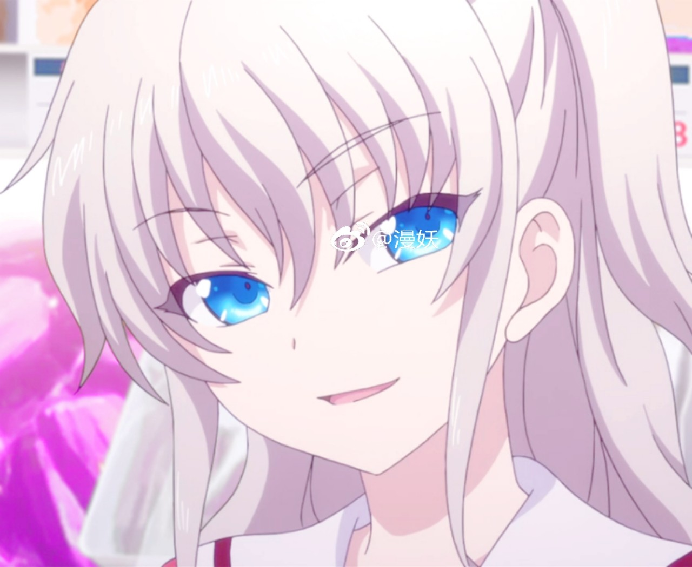

Charlotte · Nao Tomori
把日常，
把日常，
变成可完成的事。
这是友利奈绪的个人页面，也是一个能真正管理待办的 AI 工作空间。说一句话，任务会进入数据库；刷一下页面，它还在。
海风与晴空 · 记忆碎片
记忆画廊
精选画面 · 左右滑动或向下滚动
记忆瀑布
更多精选画面 · 粉蓝玻璃卡片




📋 今天的清单
可以直接新增，也可以去 AI 对话里说“帮我加一条明天交实验报告”。
加载中...
🤖 星尘助手
支持流式回答、连续对话和停止生成。更重要的是，它能调用 add_item / query_items，真正操作待办数据库。
打开完整 AI 工作台 →工作台和首页使用同一个 Flask 服务、同一个 todos.db。
能做什么
· 帮我加一条明天交实验报告
· 查一下有哪些任务
· 用自然语言管理清单
· 刷新后数据仍在
这是一个整合项目。夏洛特网页、待办接口、SQLite、AI 对话和工具调用不再是五个分开的作业，而是同一个本地应用：一个启动入口、一套接口、一个数据库、一个 AI。
页面使用粉蓝渐变和液态玻璃质感；图片来自公开网络，仅用于个人学习与展示。音乐、抓包练习等旧功能仍然保留。